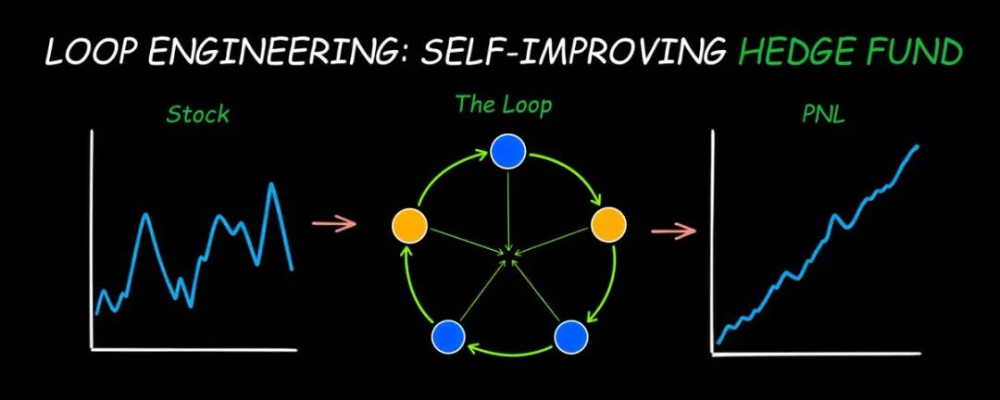
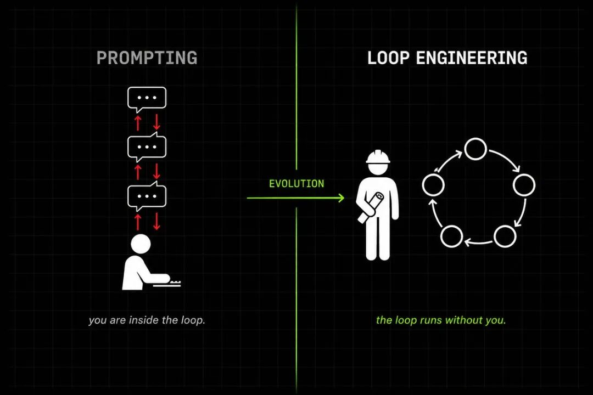
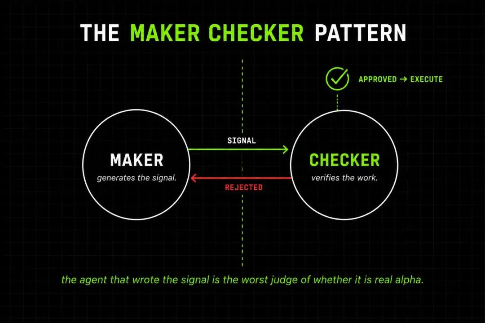
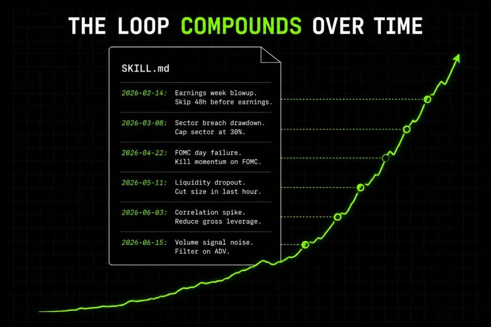

用 Loop Engineering 构建会自我进化的量化系统
作者：Roan (@RohOnChain)
原文链接：https://x.com/RohOnChain/status/2069056530960490835
导读
这篇文章最有价值的地方，在于它把“怎么向 Claude 提问”这个层级，直接提升到了“怎么设计一个会持续运行的系统”。对量化交易来说，这个视角转换尤其关键，因为量化本来就是一个反复迭代、持续校验、长期积累优势的 loop。
文章里最值得细看的部分，是作者把一个可运行的自主量化系统拆成了六个通用部件：automation、skill、state file、verifier、worktrees、connectors。这个拆法很适合工程师，因为它对应的几乎全是可实现、可验证、可扩展的系统能力。
另一个值得读的点，是作者把“maker-checker”思路放进了量化交易。生成信号的 agent 和验证信号的 agent 必须分离，推理链路也要分离。这个判断很重要，因为很多 AI + 量化系统卡住的地方，问题恰恰出在“自己生成、自己认可”。
如果你在做 AI agent、量化研究、自动化交易，或者任何需要长期运行的自主系统，这篇文章提供的是一套可以直接映射到工程实现的 workflow。
我会把如何搭建这些 loops 讲清楚，让它们能够独立跑完整个量化交易系统。
直接开始。

我会把如何搭建这些 loops 讲清楚，让它们能够独立跑完整个量化交易系统。
直接开始。
从今天开始，我想做一件事。
前 20 个方案我会亲自过一遍，告诉你，你现在手里的东西，距离一个真正能持续产出 alpha 的系统，还缺哪些环节。
如今大多数量化研究员还在用 Claude 做提示式交互。
他们输入。
等待。
阅读输出。
再输入一次。
而地球上最聪明的那批构建者，已经换了一种工作方式。
他们写 loops。
loops 去向 Claude 发 prompt。
loops 去验证输出。
loops 去决定下一步发生什么。
哪怕笔记本电脑已经合上，loops 仍然继续运行。
两周前，Anthropic 的 Claude Code 负责人 Boris Cherny 把这件事说得很直接：“我已经不再亲自 prompt Claude 了。我运行的是一组会去 prompt Claude、并自行判断下一步该做什么的 loops。我的工作是写 loops。” 这一句话，直接改变了每一个认真做 AI 工程的人对构建方式的理解。它和量化交易的结合也极其自然。
很多散户量化读到这里，会觉得自己规模太小，这套方法和自己关系有限。实际情况正好相反。你的资金规模越小，这件事越重要。对一个单兵构建者来说，想缩小与那些拥有 100 位 PhD 的基金之间的差距，唯一现实路径，就是搭建一个能自主运行的 loop。
因为量化交易本身就是一个 loop。
拉取数据。
生成信号。
做回测。
执行交易。
监控风险。
重复。
华尔街上的每一家基金，跑的都是同样的循环。Renaissance 从 1988 年起就在这么跑。Citadel 用成建制的工程团队盯着每个环节。Two Sigma、Jane Street，全部如此。
唯一差别在于，他们需要几百个人坐在 loop 里面。
你完全可以把这件事交给系统。
我已经给自己搭好了这套 loop。它会按计划拉取市场数据。会运行 alpha research。会用一个独立 agent 验证每一个信号。只有通过验证的信号才会执行。每一次经验教训都会写回 memory。
这篇文章，就是我目前关于 loop engineering 的全部经验，以及如何把它接到一个完整自主交易系统上的方法。
读完之后，你会明白：
你会准确理解，prompt 一个 agent 和 engineering 一个 loop 之间，差别究竟在哪里。
你会知道，在生产环境里，每一个真正能工作的 loop，都由哪六个部分组成。
你会学会，如何从零开始，把这六个部分接成一个会自我进化的量化交易系统。
开始进入正题。
Prompting 与 Loop Engineering 的差别
过去两年里，人们与 AI 协作的方式大致都长这样。
你输入一个 prompt。
你阅读返回结果。
你根据看到的内容，输入下一个 prompt。
你自己，就是那个 loop。
agent 只是一个工具。
你始终握着它。
每一步动作，都是你坐在键盘前，决定接下来该干什么。
Loop engineering 终结了这种方式。
你已经可以从 loop 里抽身出来。
你会变成那个设计 loop 的架构师。
一个 loop，说到底就是一个递归目标。
你定义目标。
agent 围绕这个目标持续迭代。
直到某个真实、可验证的停止条件被满足，loop 才会停下。
agent 每次运行之间会遗忘。
loop 会持续保留上下文。
这一点，就是整套架构的支点。
这就是 Boris 那句话真正的含义。
他的工作已经从“一次次手动输入指令”，转成“构建系统，让系统替他发送指令、读取结果、判断下一步”。
对写代码来说，这会改变软件的交付方式。
对交易来说，这会改变一切。
因为从来没有哪个量化研究员，靠打一条 prompt 然后离开电脑，就能赚到钱。
优势来自同一个循环被执行上千次。
每次迭代提升 1%。
永不停机。
这正是 loop 的工作方式。
如果你还在对 Claude 一笔交易一笔交易地输入 prompt，那你做的仍然是 Boris 两年前就已经放下的工作。真正的 leverage point 已经上升了一层。你需要写的，已经从“更好的 prompt”，变成“那个会去写 prompt 的系统”。

每一个可运行 loop 的六个部件
一个真正能工作的 loop，由六个部分构成。
少了任何一个，它都很容易悄无声息地出问题。
- 1. Automation（自动化）
它是整个系统的心跳。
可以是 cron 调度、webhook、/loop 命令，或者 Claude Code 里的某个 hook。关键点只有一个：它能在你没有手动输入时自行触发。
这里有两种很值得理解的形态。
/loop 会按固定节奏重复运行，不看当前状态。
/goal 会持续推进，直到你设定的某个可验证条件真的成立，并且会有一个独立的小模型来判断工作是否完成。
放在交易里，/loop 就是“每分钟拉一次数据”。
/goal 则是：“持续迭代这个信号，直到回测 Sharpe 高于 1.5。”
- 2. Skill（技能）
skill 就是一份操作手册。
agent 每个 session 都会读取它，这样每次都能直接进入工作状态。
它通常放在 SKILL.md 文件里。
里面写的是你的约定、规则，以及那些“我们现在这样做，是因为曾经踩过那个坑”的经验。
有了 skill，loop 的每次运行都能承接前面的意图。
有了 skill，意图会持续积累。
- 3. State file（状态文件）
通常是一个 markdown 文件。
名字一般叫 STATE.md 或 PROGRESS.md。
它能跨运行保留下来。
agent 会遗忘。
文件会一直在。
agent 每次运行开始时先读它。
运行结束时再把结果写回去。
这件事听上去很朴素，甚至有点笨。
实际上，它是每一个可运行 loop 的脊柱。
- 4. Verifier（验证器）
写出代码的 agent，往往最难客观判断代码是否正确。
把这个逻辑搬到交易里也完全成立。
生成交易信号的 agent，同样最难判断这个信号到底是真 alpha，还是噪声。
你需要一个独立 agent。
它要有不同的指令。
理想状态下，它还要使用不同模型。
它唯一的职责，就是验证结果。
这就是 maker-checker 模式。
华尔街上每一家 proprietary trading shop，内部都按这种方式组织。
在 Jane Street，提出交易的人不会审批这笔交易。
在 Citadel，构建模型的研究员不会亲自验证模型。
- 5. Worktrees（工作树）
一旦你让多个 agent 同时处理同一批文件，它们很快就会相互冲突。
Git worktrees 会给每个 agent 提供一个隔离开的工作目录，并指向各自独立的分支。
在交易系统里，这意味着你可以并行运行信号研究、回测和风险监控，彼此互不干扰。
- 6. Connectors（连接器）
一个只能读取文件的 loop，能力其实很小。
通过 Model Context Protocol 搭建的 connectors，可以让 loop 去访问 broker API、查询数据库、发 Slack 消息、向交易所发送订单。
这就是“一个只能提出交易建议的 loop”和“一个真的会下单的 loop”之间的差别。
这六个部件具有普适性。
你会在 Claude Code 里看到它们。
会在 Codex 里看到它们。
会在地球上一切真正可运行的 agentic system 里看到它们。
下面我来展示，如何把它们接成一个完整的交易系统。
如何构建一个会自我进化的量化交易 loop
量化交易 loop 一共分五个阶段。
每个阶段都是一个独立的子 loop。
每个子 loop 都有自己的 skill、自己的 state file，以及自己的 verifier。
第一阶段：数据摄取。
一个 automation 会按分钟、小时或天触发，具体节奏取决于资产类别。
@loop(interval="1h")
def ingest_data():
data = fetch_market_data(symbols=universe, lookback="30d")
state.write("latest_data.parquet", data)数据会写入共享 state file，供下一阶段读取。
第二阶段：信号生成。
alpha research 就发生在这里。
@loop(trigger="data_updated")
def generate_signal():
data = state.read("latest_data.parquet")
signal = claude.run_skill("alpha_research", data)
state.write("pending_signal.json", signal)负责生成信号的 agent，会读取一个 SKILL.md 文件，里面保存的是你的 alpha research 规则。
## alpha_research_skill.md
## Goal
Generate signals using linear regression on the last 30 days
of price and volume data.
## Rules
- Sharpe ratio must be above 1.5 in 3 of the last 5 backtests
- Position size limited to 2 percent of capital per signal
- Skip signals on FOMC announcement days
- Skip signals 48 hours before earnings releases
## Lessons learned
- 2026-02-14: Lost 4.2 percent during earnings week.
New rule: skip any signal 48 hours before earnings.
- 2026-03-08: Sector exposure breach caused 6 percent drawdown.
New rule: cap sector exposure at 30 percent.
- 2026-04-22: Momentum signal blew up on FOMC day.
New rule: kill all momentum signals on FOMC days.这个 skill 会随着时间不断生长。
每次亏损，都会新增一条经验教训。
每条经验教训，都会变成下一次运行的新规则。
这就是系统能够自我进化的原因。
第三阶段：验证。
信号会被送到一个完全独立的 agent 手里。
不同模型。
不同指令。
它和原始信号生成时的推理过程之间有清晰隔离。
@checker
def verify_signal(signal):
result = claude.invoke(
skill="backtest_verification_skill.md",
signal=signal,
rules=[
"Sharpe ratio above 1.5",
"Max drawdown below 10 percent",
"Newey-West t-stat above 2.0",
"Out of sample period at least 2 years"
]
)
return result.verdict如果验证失败，信号直接作废。
如果通过，才会进入执行环节。
验证器永远看不到 maker 的推理过程。
这种隔离，本身就是优势来源。
你还可以让 checker 使用比 maker 更强的模型。
比如生成阶段用 Claude Sonnet，验证阶段用 Claude Opus。
不同模型架构更容易捕捉不同类型的错误。
这和机器学习里 ensemble methods 的逻辑完全一致。

第四阶段：执行。
只有通过验证的信号，才会到达这里。
@auto_mode
def execute(signal):
if verify_signal(signal):
broker.send_orders(signal, max_position=0.02)
state.write("active_trades", signal)broker API 由 MCP connector 处理。
这个 loop 会直接进入执行链路。
auto mode 让它可以完全无人值守地运行。
第五阶段：风险监控。
它会一直在并行 worktree 中运行。
@loop(interval="1m")
def monitor_risk():
positions = broker.get_positions()
if drawdown(positions) > 0.05:
broker.close_all()
state.append("STATE.md", "Drawdown trigger hit. All positions closed.")这就是 kill switch。
它会执行规则，动作非常坚决。
这五个子 loop 组合起来，就形成了一个自运行系统。
数据流入。
信号生成。
信号验证。
通过验证的信号被执行。
风险持续监控。
经验教训被写回 memory。
然后，循环重新开始。

我把这套系统设计好之后，就再也没有手动 prompt 过这些步骤。
这就是 loop engineering。
这就是 Boris 那句话的真实含义：他的工作是写 loops。
有一个提醒非常重要。
如果 loop 没有真实、可检验的停止条件，它就会悄悄失效。
agent 会发出“已完成”的信号，误以为那个只做了一半的任务已经结束。
loop 退出。
坏掉的交易头寸继续挂在市场里。
所以，你的停止条件必须能被某种独立于 agent 自我声明的机制检查。
“最近 30 笔交易的 Sharpe 高于 1.5。”
“回撤低于 5%。”
“测试套件全部通过。”
永远不要写成“agent 说它做完了”。
我在上一篇关于博弈论的文章里解释过，为什么每一笔交易本质上都是一个多方参与、信息不完备的策略博弈。如果你错过了那篇，读完这里之后很适合接着看：
loop 的价值，就在于它让你能够一直坐在那张桌子边，却又不会被耗尽。